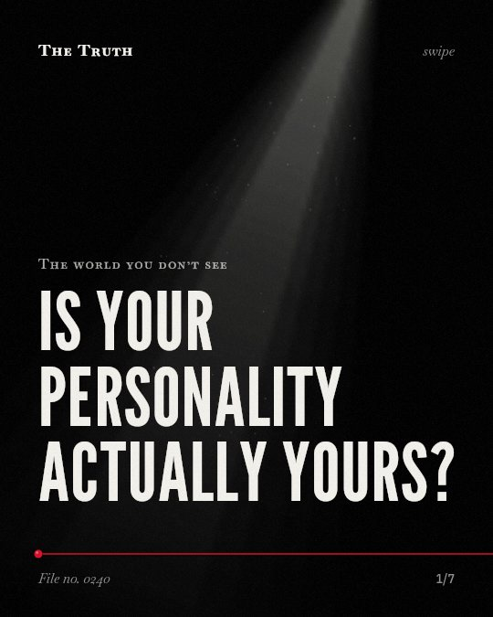

Think about this
Does your screen offer a bridge or a gate?
While platforms enable trust-building and engagement, access is hindered by existing capital inequalities and the specific needs of marginalized groups. The evidence is mixed.
Established. 5 checked claims from 4 studies.
Read the fileLatest files
 Is the bot actually being sincere?
Is the bot actually being sincere? Does your bank account change your kindness?
Does your bank account change your kindness? Who is the park actually for?
Who is the park actually for? Does your brain choose survival over you?
Does your brain choose survival over you? Did your house design decide your role?
Did your house design decide your role?
Is your personality actually yours? Does your diet dictate how you treat people?
Does your diet dictate how you treat people? Can a computer predict your next move?
Can a computer predict your next move? Was the weekend actually invented for your rest?
Was the weekend actually invented for your rest? Does your solitude leave a physical mark?
Does your solitude leave a physical mark? Does your search for the perfect partner create the conflict you want to avoid?
Does your search for the perfect partner create the conflict you want to avoid? Does school food actually cause metabolic issues?
Does school food actually cause metabolic issues?By subject
The Truth is a research desk, not an opinion page. A file is only published when its claims can be tied, word for word, to a published study. When the evidence is mixed, the file says so. When it cannot be proven, it is dropped.